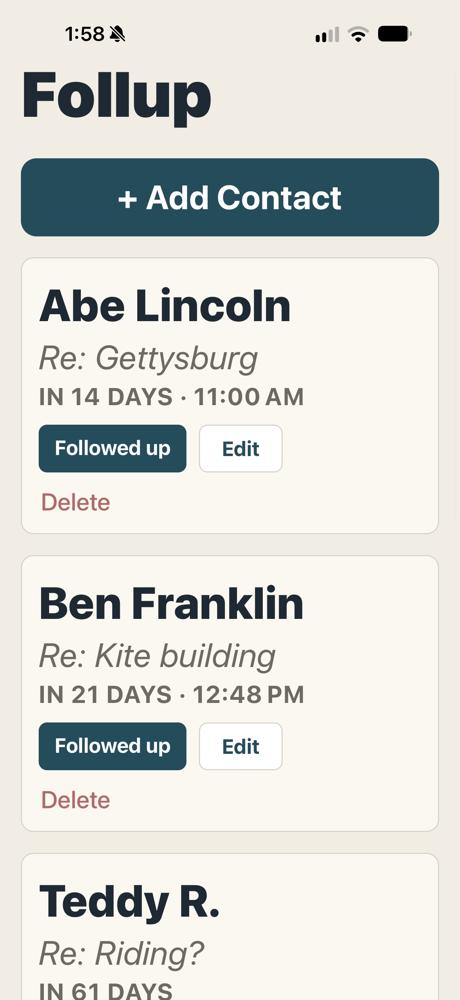
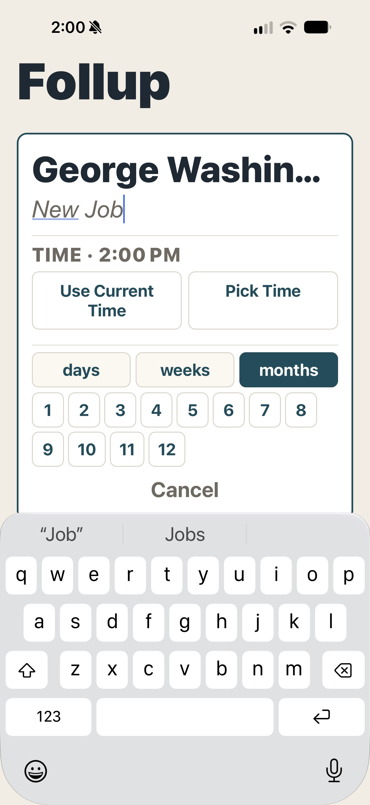
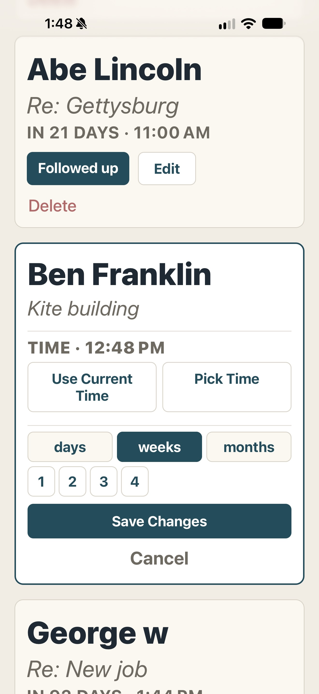

Remember the conversation.
Keep a name and a short note together so you know exactly why you wanted to reconnect.
People are worth remembering.
Follow-ups should be easy.
Whether it's checking in with a friend, reconnecting with a colleague, or following up on a conversation, Follup helps you remember when to reach out. No complicated CRM. No cluttered calendar. Just the follow-ups that matter to you.
Add a person, jot down what it's about, and choose when you'd like to follow up. Follup keeps the process straightforward.
Keep a name and a short note together so you know exactly why you wanted to reconnect.
Choose a reminder in days, weeks, or months. Pick a time that works for you.
See your follow-ups in chronological order, make changes when plans shift, and mark them when you've followed up.
Three steps, one straightforward workflow. These are screenshots from the actual app.



Follup is being prepared for its first round of community testing. Feedback from early testers will help refine the experience before public release.
Built for iPhone and Android. Public download links will be added as releases become available.
Have a question about Follup or an idea you'd like to share? I'd be happy to hear from you.
hello@dkangas.com